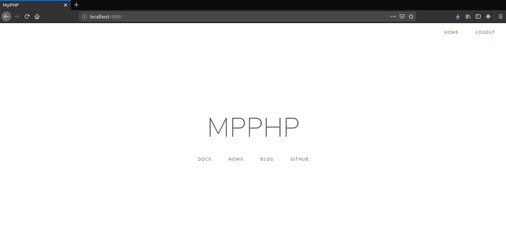
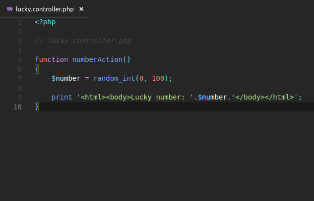
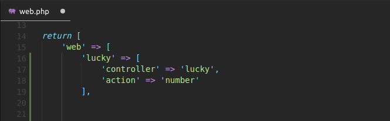
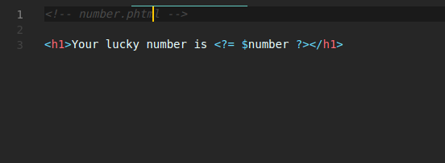
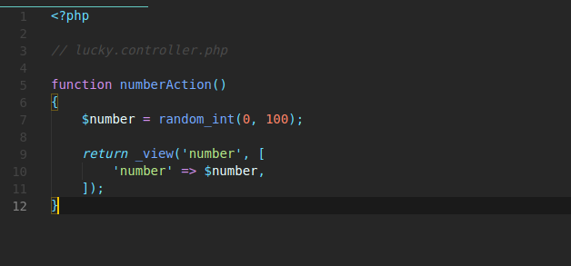

Notice
Up until the time of this documentation I am not aware of any PHP templating engine built without OOP so if you know of any please let me know by raising an issue.
To create your new MpPHP application, first make sure you're using PHP 7.1 or higher and have Composer installed. If you don't, start by installing Composer globally on your system. If you want to use an all-in-one setup for your development environment, check out Wampserver if your on windows.
Create your new project by running:
$ composer create-project mpphp/mpphp my-project
This will create a new my-project directory, download some dependencies into it and even generate the basic directories and files you'll need to get started. In other words, your new app is ready!
On production, you should use a web server like Nginx or Apache. But for development, it's convenient to use the PHP's built ins web server.
Move into your new project and start the server:
$ cd my-project
$ php -S localhost:4000 -t public
Open your browser and navigate to http://localhost:4000/. If everything is working, you'll see a welcome page.

Later, when you are finished working, stop the server by pressing Ctrl+C from your terminal.
Storing your project in services like GitHub, GitLab and Bitbucket works like with any other code project! First you need to have git installed on your system. Init a new repository with Git and you are ready to push to your remote:
From within your project directory run:
$ git init
$ git add .
$ git commit -m "Initial commit"
Your project already has a sensible .gitignore file. And as you install more packages. For more on git visit the git documentation
Creating a new page in MpPHP is a two-step process:
Suppose you want to create a page - /lucky/number - that generates a lucky (well, random) number and prints it. To do that, create a "Controller file" in the "app/http/controllers" directory and a "controller" function inside of it:

To name a controller we use a snake case and we prefix action at the end of it.
Now you need to associate this controller function with a public URL (e.g. /lucky/number) so that the number() function is executed when a user browses to it. This association is defined by creating a route in the routes/web.php file:

That's it! If you are using PHP's built in web server, try it out by going to:
http://localhost:8000/lucky/number
If you see a lucky number being printed back to you, congratulations!
A PHP templating engine is the one which gives you ability to write HTML for your clients efficiently using PHP variables.
Originally PHP was built to be a templating engine, but yet it was never used primarily as a templating engine. There has been so many PHP templating engine so far in the market since PHP evolved, like Twig, Smarty, Volt, Latte to name a few, sadly they come bundled with OOP drama and we are trying to avoid all that So we are going to use the default engine but with a little tweak to make it more fun.
Up until the time of this documentation I am not aware of any PHP templating engine built without OOP so if you know of any please let me know by raising an issue.

Template files live in the “resources/views” directory so too render HTML template in our application we simply create a “number.phtml” in our “resources/views” directory.
Now, use the handy _view() function to render a template. Pass it a number variable so you can use it in our template.

The syntax is used to “print” variables in PHP. Refresh your browser to get yournew lucky number!
Just by creating our first MpPHP page we’ve managed to familiarize our selves with the directories we would be working with most of the time, but you still need to be formally introduce to the MpPHP directories:
The app directory holds the base code for your MpPHP application. If your working on the back end, this is where you will be spending most of your time.
This directory contains all the model files.
This directory contains all the repository files.
The Http directory holds different middleware, and controllers.
The bootstrap directory holds all the bootstrapping scripts used for your application.
Contains... configuration of course!. You will configure routes, services and packages.
This is the document root for your project: you put any publicly accessible files here.
This holds all the css files.
This holds all the javascript files.
This is where your template files live.
The routes directory hold all your definition files for routing such as web.php etc.
Third-party (i.e. "vendor") libraries live here! These are downloaded via the Composer package manager.